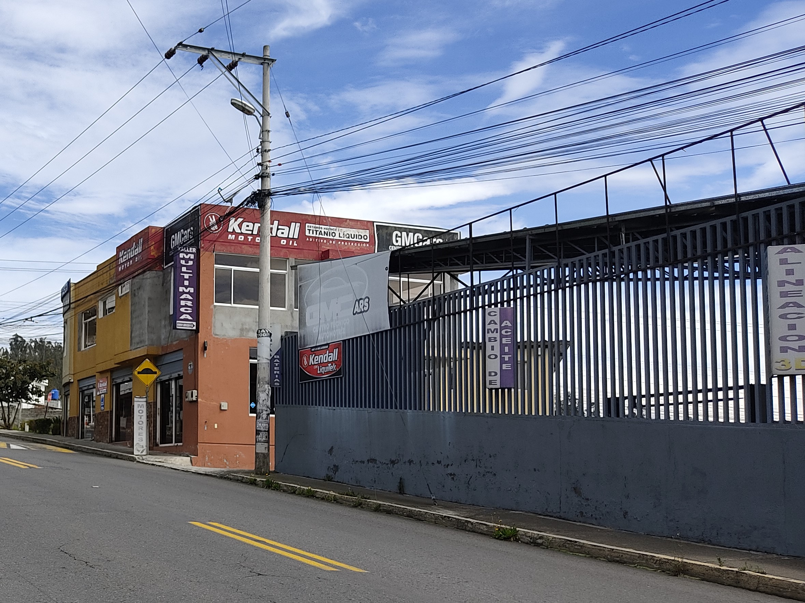

<section>
  <div class="principal">
    <div class="contenedor">
      <div class="imagenInfo">
        <div class="imagen">
          <div id="carouselExampleIndicators" class="carousel slide" data-bs-ride="carousel">
            <div class="carousel-indicators">
              <button type="button" data-bs-target="#carouselExampleIndicators" data-bs-slide-to="0" class="active"
                aria-current="true" aria-label="Slide 1"></button>
              <button type="button" data-bs-target="#carouselExampleIndicators" data-bs-slide-to="1"
                aria-label="Slide 2"></button>
              <button type="button" data-bs-target="#carouselExampleIndicators" data-bs-slide-to="2"
                aria-label="Slide 3"></button>
            </div>
            <div class="carousel-inner">
              <div class="carousel-item active">
                
              </div>
              <div class="carousel-item">
                
              </div>
              <div class="carousel-item">
                
              </div>
            </div>
            <button class="carousel-control-prev" type="button" data-bs-target="#carouselExampleIndicators"
              data-bs-slide="prev">
              <span class="carousel-control-prev-icon" aria-hidden="true"></span>
              <span class="visually-hidden">Previous</span>
            </button>
            <button class="carousel-control-next" type="button" data-bs-target="#carouselExampleIndicators"
              data-bs-slide="next">
              <span class="carousel-control-next-icon" aria-hidden="true"></span>
              <span class="visually-hidden">Next</span>
            </button>
          </div>
        </div>
        <div class="info">
          <h2>Mecánica y Taller Multimarca</h2>
          <p>El taller es apto para arreglar vehiculos de direfentes marcas como lo son:</p>
          <ul>
            <li>- Kia</li>
            <li>- Hyundai</li>
            <li>- Toyota</li>
            <li>- Mazda</li>
            <li>- Chevrolet</li>
            <li>- Great Wall</li>
            <li>- Sang Yong</li>
            <li>- Ford</li>
          </ul>
          <p>
            Se ofrece repuestos para las marcas mencionadas. Se puede encontrar en este local de igual manera
            aros y llantas de distintas marcas y modelos para su auto.
          </p>
        </div>
      </div>
      <div class="horario">
        <p>Horarios de atencion: Lunes a Sábados [8 AM - 5 PM]</p>
      </div>
    </div>
    <h2 class="ubica">Ubicación del Lugar</h2>
    <div id="map" class="mapa"></div>
  </div>
</section>
